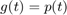
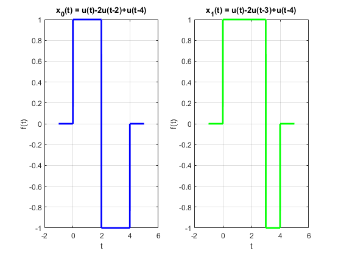
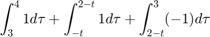

Práctica 4: Convolución y Correlación de señales en tiempo continuo
Autor: Córdova Fernández Karla Lilia
SEÑALES Y SISTEMAS, Grupo 2TV1
Contents
Objetivos de la práctica.
- Conocer métodos básicos de integración numérica
- Manipulación de instrucciones en MATLAB
- Simular convoluciones y correlaciones de señales continuas
Introducción.
- Teorema fundamental del cálculo.
Problema 1-PR04.
Para fines prácticos, en la práctica se utilizarán dos funciones anónimas para definir a la función escalón u(t) y el pulso unitario p(t). Para la convolución de señales se implementará la función convconm.m.
function convconm(x,h,a,b,vec) figure (1) % Se crea una figura para hacer las gráficas dtau = 0.005; % Base de los rectangulos para realizar la integral tau = a:dtau:b; % Intervalo de visualización del resultado ti = 0; % Indice para el vector de resultados tvec = -5:.1:5.75; % traslaciones de t, cuantas integrales se calulan y = NaN*zeros(1, length (tvec)); % Resultados de acuerdo a cuantos t for t = tvec, % Cantidad de traslaciones ti = ti+1; % Indice para guardar el resultado (indice del tiempo) if(vec == 0) xh = x(t-tau).*h(tau); % resultado de la multiplicación else xh = x(t+tau).*h(tau); end lxh = length(xh); % longitud del resultado y(ti) = sum(xh.*dtau); % Base por altura, aproximación de la integral subplot (2,1,1), % gráfica de 2 x 1 (primera) if(vec == 0) plot(tau, h(tau), 'r-', tau, x(t-tau), 'g--', t, -3, 'ob'); %graficas else plot(tau, h(tau), 'r-', tau, x(t+tau), 'c--', -t, -3, 'ob'); %graficas end axis ([tau(1) tau(end) -2.0 2.5]); % límites de los ejes patch([tau(1:end-1); tau(1:end-1); tau(2:end); tau(2:end)],... [zeros(1,lxh-1);xh(1:end-1);xh(2:end);zeros(1,lxh-1)],... [.8 .8 .8], 'edgecolor', 'none'); xlabel('\tau'); % Texto del eje X legend('h(\tau)', 'x(t-\tau)','t','h(\tau)x(t-\tau)')% Caja de Texto subplot (2, 1, 2) % gráfica de 2 x 1 (segunda) plot (tvec, y, 'k', tvec (ti), y(ti), 'ok'); xlabel ('t'); ylabel ('y(t) = \int h(\tau)x(t-\tau) d\tau'); axis ([tau(1) tau(end) -1.0 5.0]); % límites del eje grid; % malla drawnow; % efecto de movimiento continuo end end
u = @(t) (t>=0); %Escalón p = @(t) (t>=0) & (t<1); %Pulso unitario
En este problema se tienen las siguientes dos señales:

t = -1:0.001:3; f = @(t) ((-t+1).*p(t)+(t-1).*p(t-1)); g = @(t) (p(t)); subplot(1, 2, 1) plot(t, f(t), 'b', 'LineWidth', 2); grid on; xlabel('t'); ylabel('f(t)'); title('f(t) = (-t+1)p(t)+(t-1)p(t-1)'); subplot(1, 2, 2) plot(t, g(t), 'g', 'LineWidth', 2); grid on; xlabel('t'); ylabel('g(t)'); title('g(t) = p(t)');
- SOLUCIÓN ANALÍTICA.
Se hará uso de la definición de convolución dada como . Para este caso se establece:
y
,
Existen tres casos:
- La señal
 entra en la señal cuando .
entra en la señal cuando . - La señal queda contenida dentro de cuando .
- El último caso es el de la salida de de la otra señal donde .
Ejecutando la operación con código:
syms t tau conv1 = int(-tau+1,tau,0,t) conv2 = int(tau-1,tau,1,t) + int(-tau+1,tau,t-1,1) conv3 = int(tau-1,tau,t-1,2)
conv1 = -(t*(t - 2))/2 conv2 = (t - 1)^2/2 + (t - 2)^2/2 conv3 = -((t - 1)*(t - 3))/2
La descripción de la nueva señal generada por la correlación de y queda escrita como:

t = -1:0.001:4; C_fg = (-t.^2/2+t).*p(t)+((t-1).^2/2+(t-2).^2/2).*p(t-1)+(-((t-1).*(t-3))/2).*p(t-2); subplot(1,1,1) plot(t, C_fg, 'r', 'LineWidth', 2); grid on; xlabel('t'); title('C_{f(t)g(t)} = f(t)*g(t)');
Como comprobación, se compara el resultado del proceso analítico con el de la función convconm.m donde se puede apreciar que se ha llegado al mismo resultado:
convconm(f,g,0,4,0)
Ejercicio 3) - PR04.
En este problema se tienen las siguientes dos señales:
t = -1:0.001:4; f = @(t) ((t).*p(t)+p(t-1)); g = @(t) (p((t-1)/2)); subplot(1, 2, 1) plot(t, f(t), 'b', 'LineWidth', 2); grid on; xlabel('t'); ylabel('f(t)'); title('f(t) = (-t+1)p(t)+(t-1)p(t-1)'); subplot(1, 2, 2) plot(t, g(t), 'g', 'LineWidth', 2); grid on; xlabel('t'); ylabel('g(t)'); title('g(t) = pulso(t)');
- SOLUCIÓN ANALÍTICA.
Se establecen las señales con su respectiva modificación:
y
,
Existen cuatro casos:
- La señal entra en la señal cuando .
- La señal queda contenida dentro de cuando .
- Cuando .
- El último caso es el de la salida de de la otra señal donde .
Ejecutando la operación con código:
syms t tau conv1 = int(tau,tau,0,t-1) conv2 = int(1,tau,1,t-1) + int(tau,tau,0,1) conv3 = int(1,tau,1,2) + int(tau,tau,t-3,1) conv4 = int(1,tau,t-3,2)
conv1 = (t - 1)^2/2 conv2 = t - 3/2 conv3 = 3/2 - (t - 3)^2/2 conv4 = 5 - t
La descripción de la nueva señal generada por la correlación de y queda escrita como:
t = 0:0.001:6; C_fg = ((t-1).^2/2).*p(t-1)+(t-3/2).*p(t-2)+(3/2-(t-3).^2/2).*p(t-3)+(5-t).*p(t-4); subplot(1,1,1) plot(t, C_fg, 'r', 'LineWidth', 2); grid on; xlabel('t'); title('C_{f(t)g(t)} = f(t)*g(t)');
Como comprobación, se compara el resultado del proceso analítico con el de la función convconm.m donde se puede apreciar que se ha llegado al mismo resultado:
convconm(f,g,0,6,0)
Ejercicio e) - PR06.
En este problema se quiere obtener la autocorrelación de:
t = -1:0.001:5; x1 = @(t) (u(t)-2.*u(t-3)+u(t-4)); subplot(1, 1, 1) plot(t, x1(t), 'b', 'LineWidth', 2); grid on; xlabel('t'); ylabel('f(t)'); title('f(t) = (-t+1)p(t)+(t-1)p(t-1)');
- SOLUCIÓN ANALÍTICA.
Se hará uso de la definición de correlación dada como . Se establece la señal como:
Se aplica la suma cartesiana para los intervalos de la convolución:
En este ejercicio, se presentan seis casos:
- La señal entra por primera vez a la señal cuando .
- En los traslapes internos, cuando
 .
. - Cuando .
- Cuando .
- Cuando .
- Cuando la señal ya va de salida de , cuando .
En código, se resuelven las integrales de esta manera:
syms t tau i1 = int(-1,tau,0,4-t) i2 = int(-1,tau,3-t,4-t)+ int(1,tau,0,3-t) i3 = int(-1,tau,3-t, 3) + int(1,tau,3,4-t) + int(1,tau,0,3-t) i4 = int(1,tau,3-t,4) + int(-1,tau,3,3-t) + int(1,tau,-t,3) i5 = int(-1,tau,3,4) + int(1,tau,-t,3) i6 = int(-1,tau,-t,4) %
i1 = t - 4 i2 = 2 - t i3 = 4 - 3*t i4 = 3*t + 4 i5 = t + 2 i6 = - t - 4
La descripción de la nueva señal generada por la autocorrelación de queda escrita como:
t = -5:0.001:5; Rx1x1 = (t-4).*p(t-3)+(2-t).*p((t-1)/2)+(4-3*t).*p(t)+(3*t+4).*p(t+1)+(t+2).*p((t+3)/2)+(-t-4).*p(t+4); subplot(1,1,1) plot(t, Rx1x1, 'm', 'LineWidth', 2); grid on; xlabel('t'); title('R_{x_1(t)x_1(t)} = x_1(t)**x_1(t)');
Como comprobación, se compara el resultado del proceso analítico con el de la función convconm.m donde se puede apreciar que se ha llegado al mismo resultado:
convconm(x1,x1,-5,5,1);
%
Ejercicio f) - PR06.
En este problema se busca la correlación de las siguientes señales:
t = -1:0.001:5; x0 = @(t) (u(t)-2.*u(t-2)+u(t-4)); x1 = @(t) (u(t)-2.*u(t-3)+u(t-4)); subplot(1, 2, 1) plot(t, x0(t), 'b', 'LineWidth', 2); grid on; xlabel('t'); ylabel('f(t)'); title('x_0(t) = u(t)-2u(t-2)+u(t-4)'); subplot(1, 2, 2) plot(t, x1(t), 'g', 'LineWidth', 2); grid on; xlabel('t'); ylabel('f(t)'); title('x_1(t) = u(t)-2u(t-3)+u(t-4)');
- SOLUCIÓN ANALÍTICA.
Del mismo modo que el ejemplo anterior con la definición de correlación, se establecen las señales como:
Se aplica la suma cartesiana para los intervalos de la convolución:
Como en el problema anterior, se presentan casos muy similares:
- Cuando la primer señal entra a la segunda, cuando .
- En los traslapes internos, cuando
 .
. - Cuando .
- Cuando .
- Cuando .
- Cuando .
- Cuando la señal ya va de salida de , cuando .
En código, se resuelven las integrales de esta manera:
syms t tau i1 = int(-1,tau,0,4-t) i2 = int(1,tau,0,2-t)+ int(-1,tau,2-t,4-t) i3 = int(1,tau,0,2-t) + int(-1,tau,2-t,3) + int(1,tau,3,4-t) i4 = int(1,tau,-t,2-t) + int(-1,tau,2-t,3) + int(1,tau,3,4) i5 = int(1,tau,-t,3) + int(-1,tau,3,2-t)+ int(1,tau,2-t,4) i6 = int(-1,tau,3,4)+ int(1,tau,-t,3) i7 = int(-1,tau,-t,4) %
i1 = t - 4 i2 = -t i3 = 2 - 3*t i4 = 2 - t i5 = 3*t + 6 i6 = t + 2 i7 = - t - 4
La descripción de la nueva señal generada por la correlación de y queda escrita como:
t = -5:0.001:5; Rx0x1 = (-t-4).*p(t+4)+(t+2).*p(t+3)+(3*t+6).*p(t+2)+(2-t).*p(t+1)+(2-3*t).*p(t)+(-t).*p(t-1)+(t-4).*p((t-2)/2); subplot(1,1,1) plot(t,Rx0x1, 'm', 'LineWidth', 2);grid on; xlabel('t'); title('R_{x_0(t)x_1(t)} = x_0(t)**x_1(t)');
Como comprobación, se compara el resultado del proceso analítico con el de la función convconm.m donde se puede apreciar que se ha llegado al mismo resultado:
convconm(x0,x1,-4.5,5,1);
%